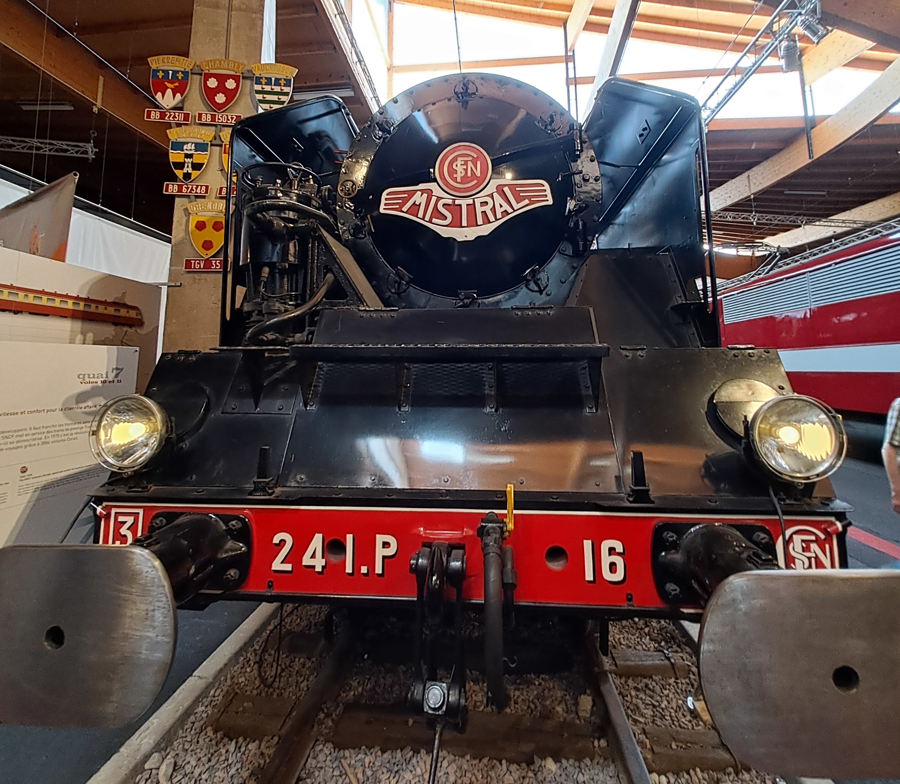

Le matériel ferroviaire avant 1938
Les engins moteurs: les locomotives à vapeurs
Les locomotives à vapeurs sont des engins moteurs qui ont été inventé au début du XIXème siècle et qui on arrété de circuler dans les années 70.
Elles possédent chacune un numéro mais aussi une appellation, les voici:
| Numérotation | Disposition des essieux |
|---|---|
| 020 | OO |
| 030 | OOO |
| 040 | OOOO |
| 110 | oO |
| 111 | oOo |
| 120 | oOO |
| 121 | oOOo |
| 130 | oOOO |
| 131 | oOOOo |
| 132 | oOOOoo |
| 140 | oOOOO |
| 141 | oOOOOo |
| 142 | oOOOOoo |
| 150 | oOOOOO |
| 151 | oOOOOOo |
| 152 | oOOOOOoo |
| 160 | oOOOOOO |
| 210 | ooO |
| 211 | ooOo |
| 220 | ooOO |
| 221 | ooOOo |
| 222 | ooOOoo |
| 230 | ooOOO |
| 231 | ooOOOo |
| 232 | ooOOOoo |
| 240 | ooOOOO |
| 241 | ooOOOOo |
| 242 | ooOOOOoo |
| 250 | ooOOOOO |
| 251 | ooOOOOOo |
| 252 | ooOOOOOoo |
| 261 | ooOOOOOOo |
| 310 | oooO |
| 0330 | OOO OOO |
| 0440 | OOOO OOOO |
| 1330 | oOOO OOO |
| 1333 | oOOO OOOooo |
| 1441 | oOOOO OOOOo |
| 1442 | oOOOO OOOOoo |
| 2222 | ooOO OOoo |
| 2331 | ooOOO OOOo |
| 2332 | ooOOO OOOoo |
| 2442 | ooOOOO OOOOoo |
| 3223 | oooOO OOooo |
| 14441 | oOOOO OOOO OOOOo |
| 14442 | oOOOO OOOO OOOOoo |
Exemples de locomotives à vapeurs
